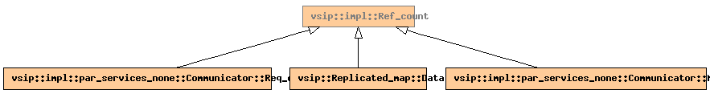

Global Namespace
Inheritance Tree
Inheritance Graph
Name Index
template <
typename
DerivedClass>
class
vsip
::
impl
::Ref_count
File:
../../../vsip/core/refcount.hpp

-
Public Member functions
constructor
Ref_count
()
void
increment_count
()
const
void
decrement_count
()
const
unsigned int
impl_debug_count
()
const
-
Private Member functions
constructor
Ref_count
(const
Ref_count
&)
Ref_count
&
operator=
(const
Ref_count
&)
-
Private Data members
Checked_counter
count_
Generated on Sat Apr 17 11:13:30 2010 by
synopsis
(version 0.12)
 synopsis
synopsis